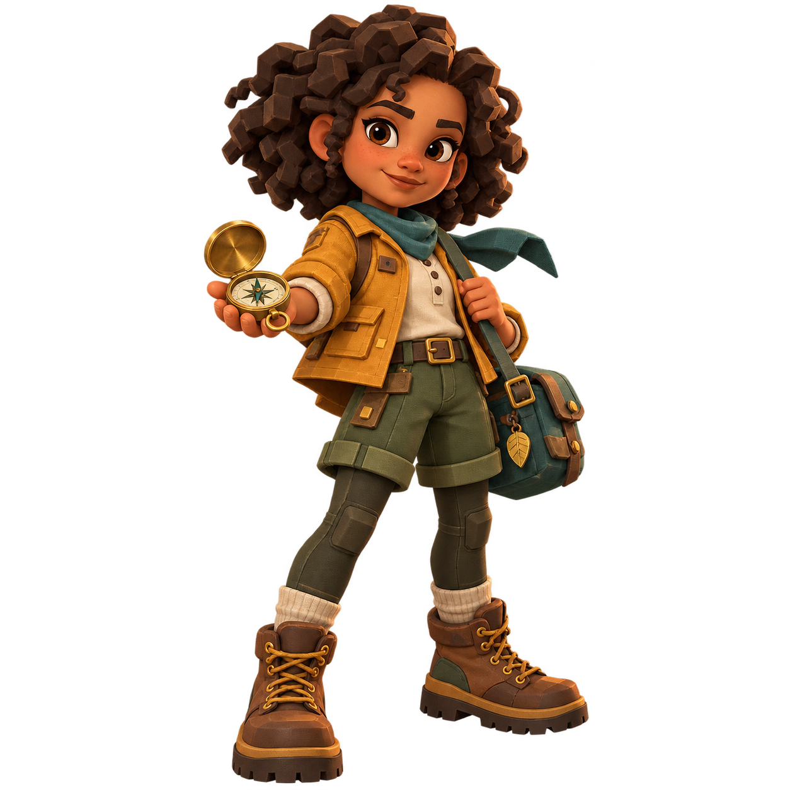

Clique na casa brilhante
O botão Jogar também abre o desafio atual. As outras casas ficam fechadas até você chegar a elas.
Você começa na casa 01. Conquiste as 200 casas para acender o farol.
O botão Jogar também abre o desafio atual. As outras casas ficam fechadas até você chegar a elas.

02 / RESPONDA COM PISTASEscolha a resposta e marque no texto o trecho que a sustenta. Quando precisar, peça uma pista. Um erro é uma chance de investigar de novo.
Confirme sua vitória para o personagem saltar à próxima casa. A cada cinco casas, um portal abre uma nova fase e uma construção é restaurada!
As fases praticam localizar informações, inferir, conectar ideias, interpretar linguagem figurada, comparar fontes e argumentar. Você pode revisitar as casas conquistadas.
As histórias são ficcionais. O diário registra suas jogadas e reflexões. A escrita final fica guardada para você conversar sobre ela com um adulto.
Abra o menu ☰ para escolher fases, ajustar o som, aproximar, ver o tabuleiro inteiro ou voltar à sua casa. Arraste o cenário para olhar ao redor. As setas movem a câmera; Enter abre o desafio atual. O personagem avança quando você vence.
Referência de concepção: EEF — estratégias de compreensão leitora. O jogo ainda não foi avaliado com crianças.
Filha, seu pai te ama muito. Que você tenha muito sucesso na vida e que Deus te abençoe sempre.
Desenvolvido por Carlos Antonio de Oliveira Piquet, pai de Ana Carla Saraiva Piquet.
Uma jornada de 200 casas para descobrir, aprender e construir seu próprio caminho.© 2026 Ana Carla Saraiva Piquet. Direitos próprios reservados. O desenvolvedor destinou a Ana Carla 100% dos direitos patrimoniais que detém sobre o projeto.
A licença proprietária permite o uso pessoal e pedagógico privado e reserva a distribuição e exploração comercial dos elementos próprios à titular. Sons e componentes de terceiros mantêm suas licenças.
Ler licençaBaixar créditos e direitosMinuta de cessão para assinaturaOs documentos não substituem uma cessão assinada nem representam registro do software no INPI.